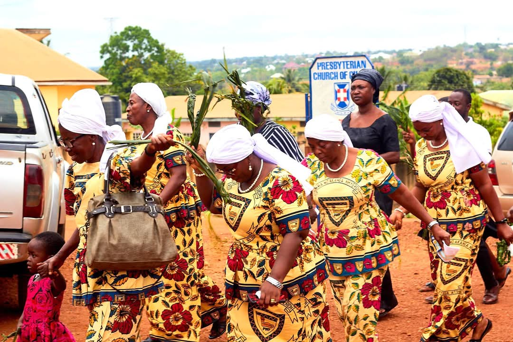
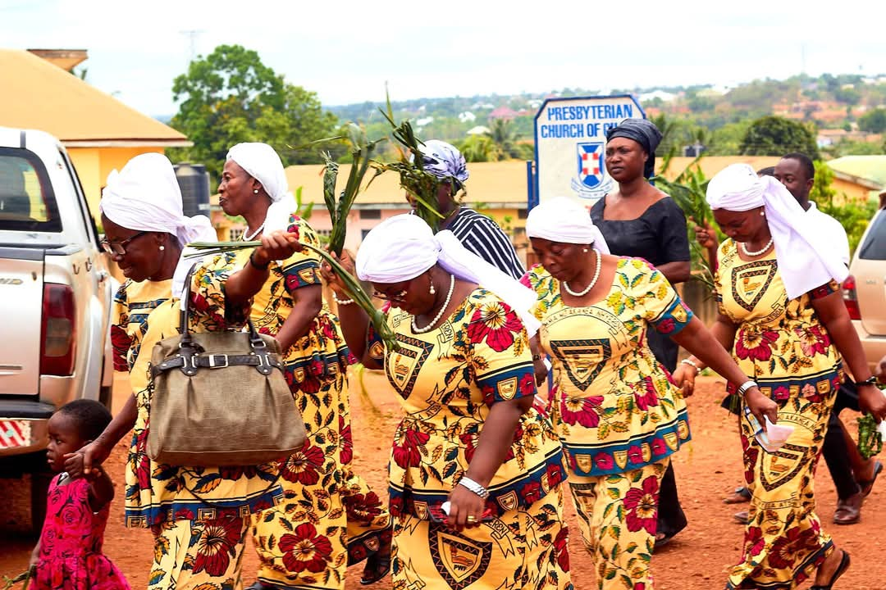
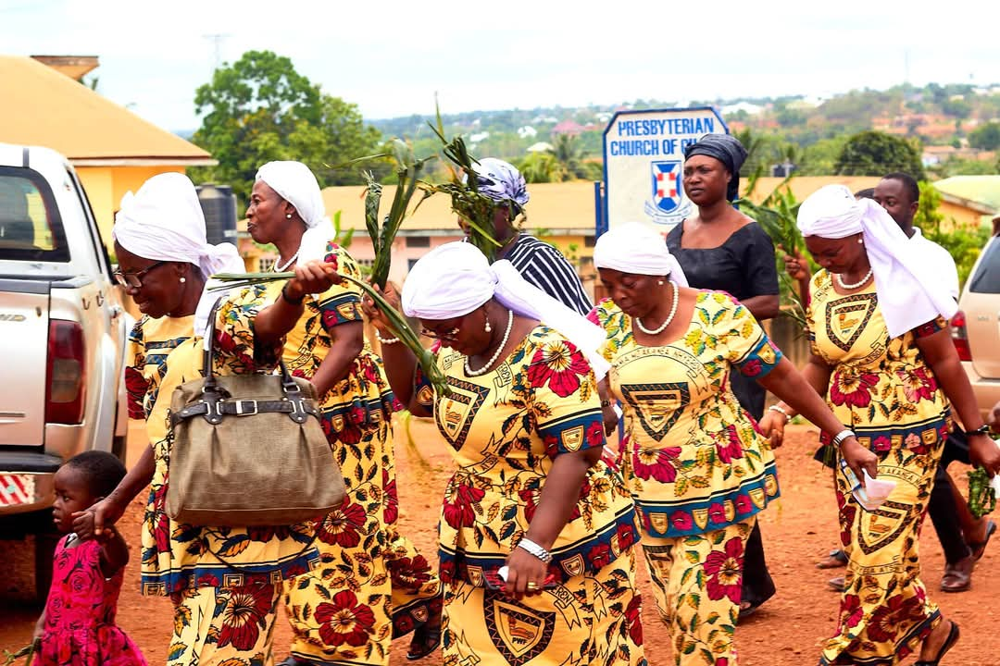

Gallery

 

"Let your light shine" – Matt. 5:16
Women’s Fellowship is an active generational group for all women between the ages of 40 and above. The group was started in 2019. Currently, the membership strength of the group is about 35.
The Fellowship aims to help the women in the church lead exemplary lives as Christian women in love and unity, so that at home, in the market, and in public, their behavior will attract other women to Christ.
Every woman above 40 years can join the group.
The fellowship meets once a month, usually on the last Saturday of the month at 8:00pm.
Our programs include health talks, prayer meetings, singing, Bible studies, discussions, and debates.
